9 设计
- 描述实验设计的关键要素
- 定义用于移除 confound 的随机化和 counterbalancing 策略
- 讨论如何设计适合目标总体的实验
本书的核心论点是：实验应该被设计成能够对因果效应产生精确且无偏的测量。但是什么东西的因果效应？答案是 manipulation！在实验中，我们会操纵（干预）世界的某个方面，并测量这个 manipulation 的效应。然后，我们把这个测量与没有发生干预的情境进行比较。
我们把不同的干预状态称为实验的条件。最常见的实验设计，是比较控制条件和实验（有时也称为处理）条件：在控制条件中不实施干预，在实验条件中实施干预。
但还可以有许多其他实验设计。在更复杂的实验中，不同维度上的 manipulation（在这个语境中有时称为因素）可以组合起来。本章第一部分会介绍一些常见实验设计，以及描述它们所需的词汇。这里我们的重点是识别那些能最大化测量精度的设计。
一个好的实验测量必须是目标构念的有效测量。manipulation 也是如此：它必须有效关联到目标因果效应。在本章第二部分，我们会讨论manipulation validity的问题，包括生态效度和混淆问题。我们会讨论随机化和 counterbalancing 这类做法，如何帮助移除 nuisance confound，这是实验设计中减少偏差的重要组成部分。1
1 这一节会借用 章 1 中对因果推断的介绍，所以如果你还没有读过那里，现在正是时候。
先预告本章的总体 take-home points：我们认为，你默认的实验应该操纵一个或两个因素，通常不要更多，并且应该在参与者内连续地操纵这些因素。虽然这样的设计并不总是可行，但它们通常最有可能产生某个特定效应的精确估计，而这些估计可以用来约束未来的理论化。我们先从一个 case study 开始，其中一个细微 confound 让一个实验结果变得难以解释。
自动的 theory of mind（心理理论）？
在我们课程的早期版本中，学生 Desmond Ong 想要重复一个发人深省的发现：婴儿和成人似乎都会追踪其他 agent 的信念状态，即便这与手头任务无关 (Kovács, Téglás, 和 Endress 2010)。在这个范式中，一个动画 Smurf 角色会看着一个自驱动的小球进出屏幕后方。在视频结尾，屏幕会倒下，参与者必须回答小球是存在还是不存在。做出这个判断的反应时是关键因变量。
这个实验设计考察两个因素：参与者是否相信小球存在或不存在（P+/P−），以及动画 agent 根据它看到的内容会相信小球存在还是不存在（A+/A−）。结果是四个条件：P+/A+、P+/A−、P−/A+ 和 P−/A−。（我们可以把这叫作一个完全交叉设计，因为一个因素的每个水平都和另一个因素的每个水平一起呈现。）
原始实验和 Desmond 做的重复实验都显示，agent 的信念会显著影响参与者的反应时。这说明那个完全无关的 agent 对小球的想法，似乎会让参与者对小球存在与否反应得更快或更慢。Figure 9.1 展示了原始数据（\(N = 24\)）。但是，尽管两项研究都显示了 agent belief 的效应，重复研究以及几个变体还显示了参与者信念和 agent 信念之间的交叉交互。当 agent 和参与者都相信小球在屏幕后面时，参与者反而更慢（图 9.2）。这个发现不符合“追踪不一致信念会减慢反应时”的理论。如果参与者在追踪自己关于小球的信念以及 agent 的信念，他们应该在 P+/A+ 条件下最快，而不是更慢。
一个围绕这个范式工作的合作团队识别出了一个关键问题 (Phillips 等 2015)。实验设计中存在一个confound，也就是除了目标因素以外，还有另一个因素在不同条件之间变化。换句话说，除了 agent 和参与者的信念状态，条件之间还有别的东西在变化。这个 confound 是一个注意力检查（章 12 会进一步讨论）：当 agent 离开场景时，参与者必须按键，以表明自己在注意。对于 P+/A+ 和 P−/A− trial，也就是反应时较慢的那些 trial，这个注意力检查在视频中出现得比另外两个条件晚几秒。当移除注意力检查，或让它在不同条件中的时间保持一致时，反应时效应就消失了。这说明原始发现模式可能是由这个 confound 造成的。
如果重复的标准是某个特定统计检验在 \(p < 0.05\) 下显著，那么这个实验成功重复了。但效应估计与被提出的理论解释并不一致。一个发现可以是可重复的，却不支持底层理论！
这个故事有一个重要 caveat。后续工作只是揭示了某个特定实验操作化中存在 confound，并没有提供反对一般意义上 automatic theory of mind 的证据。事实上，也有人提出，一旦消除这个 confound，这个范式的其他版本确实揭示了 theory of mind processing 的证据 (El Kaddouri 等 2020)。
9.1 实验设计
实验设计是许多领域的基础；遗憾的是，用来描述它们的术语可能因领域而异，这会变得相当混乱！这里我们大多把实验描述为某种 manipulation 与某个测量之间的关系，其中参与者被随机分配到实验条件中，以估计 manipulation 对测量的效应。因素是 manipulation 发生变化的维度。例如，在上面的 case study 中，两个因素是参与者信念和 agent 信念。另一个值得熟悉的术语体系，是 5–7 章中使用的术语，它们常见于计量经济学和统计学：treatment（manipulation）和 outcome（measure）。2
2 这里的术语很难。在心理学中，人们有时会说有一个自变量（manipulation，因果上在先，因此相对其他因果影响是“独立的”）和一个因变量（measure，我们假设它在因果上依赖于 manipulation）。我们觉得这个术语很难记，因为这些词和它们实际描述的概念差异很大。
本节会讨论实验变化的几个关键维度：（1）纳入多少因素，以及这些因素如何交叉；（2）每个参与者接受多少条件和测量；（3）manipulation 是离散水平，还是落在连续尺度上。
9.1.1 一个双因素实验
经典的“实验设计”框架，其目标是把因变量测量中的观察变异分解为：（1）由 manipulation 造成的变异，以及（2）其他变异，包括测量误差和参与者层面的变异。这个框架可以很好地映射到 5–7 章所描述的统计框架上。本质上，这个框架用我们实验中的条件结构作为预测变量，来建模测量的分布。
不同实验设计会让我们更有效或更不有效地估计特定效应。回想 章 5 中，我们用一个简单相减来估计茶/奶顺序 manipulation 的效应：\(\beta = \theta_{T} - \theta_{C}\)（其中 \(\beta\) 是效应估计，每个 \(\theta\) 表示一个条件的估计，即处理 \(T\) 和控制 \(C\)；在那章中，为了表示先茶和先奶条件，我们称它们为 \(\theta_T\) 和 \(\theta_M\)）。如果三条件实验中有两个不同 treatment，这个逻辑也完全可行：每个 treatment 都可以分别与 control 比较。对于 treatment 1，\(\beta_{T_1} = \theta_{T_1} - \theta_{C}\)，对于 treatment 2，\(\beta_{T_2} = \theta_{T_2} - \theta_{C}\)。
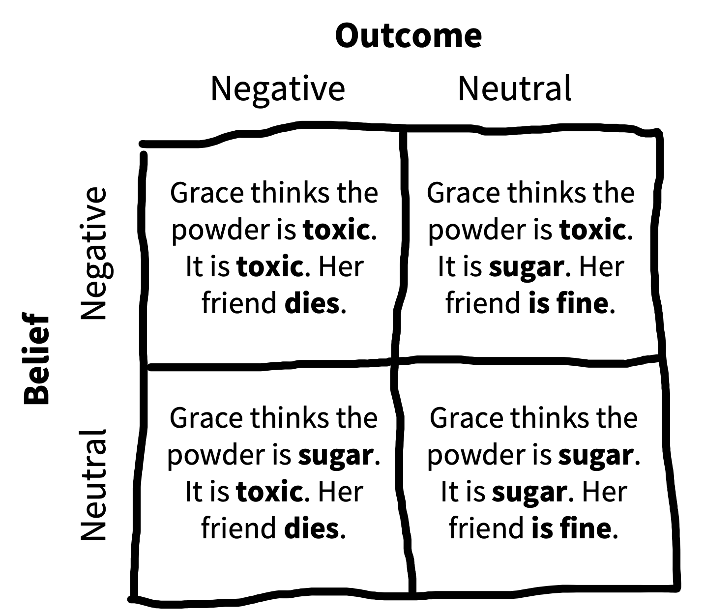
不过，如果我们有不止一个不同的目标因素，这个逻辑就会变得更复杂。来看一个例子。
Young 等 (2007) 感兴趣的是，道德判断如何同时依赖行动者的信念和他们行动的结果。他们向参与者呈现一些 vignette，例如 Grace 和朋友参观一家化工厂，然后去休息室喝咖啡；在那里，她看到一种白色粉末，并把它放进朋友的咖啡里。接着，他们按照 图 9.3 中的方案，同时操纵 Grace 的信念和她行动的结果。参与者（\(N = 10\)）使用四点 Likert scale 评分，判断这些行动在道德上是被禁止的（1）还是可允许的（4）。Figure 9.4 展示了数据。
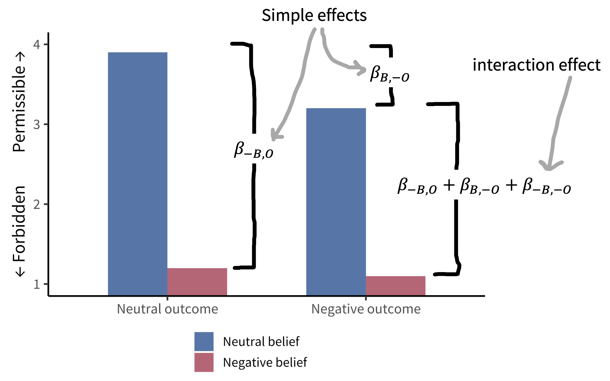
Young 等人的设计有两个因素：belief 和 outcome。每个因素有两个水平（neutral 和 negative，分别把 belief 记为 \(B\) 和 \(-B\)，outcome 记为 \(O\) 和 \(-O\)）。3 这些因素是完全交叉的：每个因素的每个水平都与其他每个因素的每个水平组合。
3 这两者都不一定是“控制”条件：目标只是比较该因素的两个水平，即 negative 和 neutral，从而估计该因素带来的效应。
这个完全交叉设计让我们很容易估计感兴趣的量。假设我们的参考组（目前等同于控制组）是 neutral belief、neutral outcome。现在我们很容易使用之前同样的相减方式来估计自己关心的特定效应。例如，我们可以看 neutral outcome 情况下 negative belief 的效应：\(\beta_{-B,O} = \theta_{-B,O} - \theta_{B,O}\)。这个效应显示在 图 9.4 的左侧。
但现在出现了一个复杂性：这两个简单效应（一个变量在另一个变量特定水平上的效应）合起来会暗示，negative belief、negative outcome 条件下的组合效应 \(\beta_{-B,-O}\) 应该等于 \(\beta_{-B,O}\) 和 \(\beta_{B,-O}\) 之和。4 从 图 9.4 可以看到，这并不对。如果真是这样，negative belief、negative outcome 条件会低于最低可能评分！
4 如果你感兴趣，也可以用同样的相减逻辑计算某个因素的平均或主效应。例如，negative belief（\(-B\)）相对于 neutral belief（\(B\)）的平均效应可以计算为\(\beta_{-B} = \frac{(\theta_{-O, -B}\ +\ \theta_{O, -B})\ -\ (\theta_{-O, B}\ +\ \theta_{O, B})}{2}\)。
5 如果你读得很仔细，可能会觉得这听起来像是在谈方差分析（ANOVA），而不是实验设计本身。其实这两个主题实际上是同一个主题！问题在于如何设计实验，使这些统计模型能够用来估计我们关心的特定效应，以及效应组合。万一你错过了，我们在 章 7 中讨论了如何在回归框架中建模交互。
相反，我们观察到一个交互效应（当有两个因素时，有时称为二阶交互）：当两个因素同时存在时的效应，不等于两个简单效应之和。 为了捕捉这个效应，我们需要一个交互项：\(\beta_{-B,-O}\)。5 换句话说，negative belief（意图）对主观道德可允许性的效应，取决于行动是否造成伤害。关键是，如果没有完全交叉设计， 我们无法估计这个交互，而且会对其中一个条件做出错误预测。
9.1.2 广义 factorial designs（因子设计）
Young 等人的设计包含两个因素，每个因素两个水平，称为 2 x 2 design（读作“two by two”）。这类 2 x 2 设计极其常见且有用，但它们只是可以构造的无限多这类设计中的一种。
假设我们向 Young 等人的设计加入第三个因素：Grace 当天对朋友的感觉是中性的，还是生气的。如果我们把第三个因素 \(A\) 与另外两个因素（\(B\) 和 \(O\)）完全交叉，就会得到一个 2 x 2 x 2 设计。这个设计有八个条件： \((A, B, O)\)、\((A, B, -O)\)、\((A, -B, O)\)、\((A, -B, -O)\)、\((-A, B, O)\)、\((-A, B, -O)\)、\((-A, -B, O)\)、\((-A, -B, -O)\)。 这些条件允许我们估计二阶和三阶交互（见 表 9.1）。
三阶交互很难思考！affect x belief x outcome 交互告诉你，由三个因素同时存在所导致的道德可允许性差异，与根据二阶交互估计所预测出来的差异之间有多大差别。除了难以思考，高阶交互通常也很难估计，因为要准确估计它们，你必须稳定估计所有低阶交互 (McClelland 和 Judd 1993)。因此，除非你处在一种情境中：既对这些交互有强预测，又确信自己有能力恰当地估计它们，否则我们不建议采用依赖高阶交互的实验设计。
事情还可以更复杂。如果你有三个因素，每个因素两个水平，如上面的例子（表 9.1），你总共可以估计七个感兴趣的效应。但如果你有四个因素，每个因素两个水平，就会有 15 个效应。四个因素、每个因素三个水平，会得到可怕的 80 个不同效应！6 至少从在合理样本量中估计和解释单个效应的角度看，这条路通向疯狂。再次强调，我们建议从单因素和双因素设计开始。遵循良好测量和抽样实践的简单设计，能教会我们很多东西。
6 一般公式是 \(N\) 个因素、每个因素 \(M\) 个水平时，有 \(M^N-1\) 个效应。
广义 factorial designs 的估计策略
那么，如果你真的关心四个或更多因素，也就是说你想估计它们的效应，并把它们纳入理论，应该怎么做？最简单的策略，是在研究起步时，用一系列单因素实验独立测量它们。当每个目标因素都有一个单一参考水平时，这种设置很自然，而且这些实验可以为判断哪些因素对 outcome 最重要提供基础，从而决定哪些因素应该优先进入估计交互的实验。
另一方面，有时一个因素没有参考水平。例如，在 Kovács, Téglás, 和 Endress (2010) 范式中，不清楚 positive belief 还是 negative belief 是参考水平。在像他们那样的完全交叉设计中，这不是问题；但如果你有两个以上这类因素，这种情况就可能造成问题。理想情况下，你会想运行独立实验，但你必须为所有其他变量选择某个水平，不能直接假设某个水平是“中性”的。
一种允许你计算主效应但不能计算交互的解决方案，叫作拉丁方。拉丁方是三因素设计的一个好方案；三因素通常也是完全交叉设计开始变得难以承受的水平。 拉丁方是一个 \(n\ \text{x}\ n\) 矩阵，其中每个数字在每一行和每一列中都恰好出现一次，例如： \[\begin{bmatrix} 1 & 2 & 3 \\ 2 & 3 & 1\\ 3 & 1 & 2 \\ \end{bmatrix}\] 这个 \(n = 3\) 的拉丁方给出了如何在 3 x 3 x 3 实验中平衡因素的方案。行号是一个因素，列号是第二个因素，单元格中的数字是第三个因素。因此，一个条件是 \((1,1,1)\)，即所有因素的第一个水平，显示在左上角单元格。另一个条件是 \((3,3,2)\)，即右下角单元格。虽然完全交叉设计需要运行 27 个单元格，拉丁方只有九个。关键是，这九个单元格中的因素组合是平衡的，因此可以估计三个因素中每个水平的平均效应。
还有更高级的方法可用。例如，optimal experiment design 文献中包含一些方法，用于选择最有信息量的一系列实验，以估计模型中的参数；这个模型可以包含许多因素及其交互 (Myung 和 Pitt 2009)。走这条路通常意味着你已经实现了一个关于研究领域的计算理论，但它可以是探索多因素复杂实验空间的一种非常有成效的策略。
9.1.3 Between- vs within-participant designs（被试间与被试内设计）
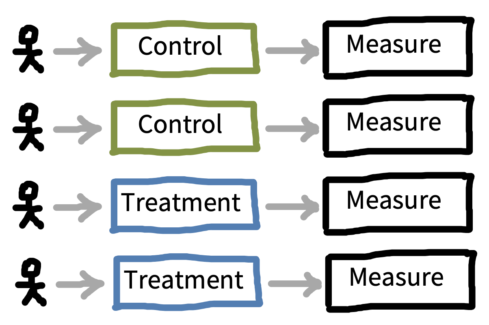
一旦你知道想在实验中操纵哪些因素，下一步就是考虑这些因素将如何呈现给参与者，以及这种呈现如何与你的测量相互作用。最大的决策是：每个参与者是只经历某个因素的一个水平，即 between-participants design，还是经历多个水平，即 within-participants design。 Figure 9.5 展示了一个简单的 between-participants design，有四名参与者（每个条件分配两名），而 图 9.6 展示了同一设计的 within-participants 版本。
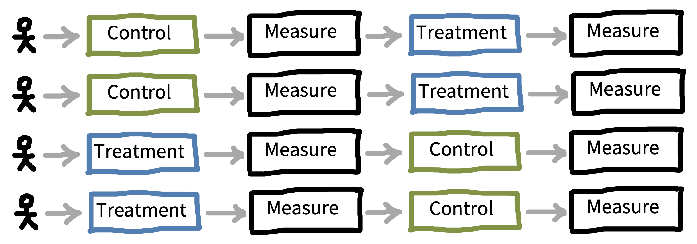
由于人们的差异很大，决定在参与者之间还是参与者内测量某个因素，会产生重要后果。想象我们像之前一样估计 treatment effect，只是计算 \(\widehat{\beta} = \widehat{\theta}_{T} - \widehat{\theta}_{C}\)，其中两个估计来自不同参与者总体。在这种情境中，我们的估计 \(\widehat{\beta}\) 包含三个成分：（1）\(\theta_{T}\) 和 \(\theta_{C}\) 之间的真实差异；（2）与抽样有关的变异，即来自总体的哪些参与者最终进入两个条件样本；（3）测量误差。 成分 2 之所以存在，是因为来自同一总体的任意两个参与者样本，在某个测量上的平均值都会不同。这正是我们在 章 6 的零分布中看到的那种抽样变异。
当实验设计是参与者内设计时，成分 2 不存在，因为两个条件中的参与者都是从同一个总体中抽到的。如果我们运气不好，所有参与者在测量上都低于总体平均数，那么这种不走运会同等影响我们的条件。选择适当样本量的后果相当极端：between-participants designs 通常需要的参与者数量，是 within-participants designs 的两到八倍！7
7 如果你想估计 within-participants 数据收集带来多大优势，需要知道你的观察值之间有多相关（可靠）。关于这个问题的一项分析 (Lakens 2016) 提出，关键关系是 \(N_{\text{within}} = N_{\text{between}} (1-\rho) /2\)，其中 \(\rho\) 是个体内两个条件测量之间的相关。它们越相关，within-participants 所需的 \(N\) 就越小。
既然有这些优势，为什么还会考虑使用 between-participants design？ within-participants design 并不适用于所有实验。例如，考虑一种医学干预，比如把一个新的手术程序和一个既有手术程序比较。患者不可能接受两种不同手术，因此不可能进行参与者内比较。
行为科学中的大多数 manipulation 没有这么极端，但给同一参与者提供多个条件仍然可能不现实或不合适。Greenwald (1976) 区分了三类不良效应：8
8 我们倾向于把所有这些都看作 carryover effect 的形式，并且有时用这个标签作为总括性描述。一些人还使用一个形象说法 “poisoning the well” (Gelman 2017)，即早期条件“毁掉”了后续条件的数据。
- 练习效应发生在实施测量或 treatment 会导致变化的时候。想象一个用于教授数学概念的课程干预：很难说服一所学校把同一个主题教给学生两次，而且第二轮教学的效应很可能与第一轮很不一样！
- 敏化效应发生在看到两个版本的干预后，你可能因为比较了它们并注意到差异，而对第二个版本作出不同于第一个版本的反应。考虑一项关于房间照明的研究：如果实验者不断改变照明，参与者可能会意识到照明是研究重点！
- 延续效应指的是一个 treatment 的效应可能比测量期持续更久。例如，想象一项研究中，一个 treatment 是让参与者因为一个不可能解开的谜题而感到沮丧；如果第二个条件安排在这个条件之后，参与者可能仍然沮丧，导致条件之间发生效应 spillover。
所有这些问题都可能让 within-participant designs 真正令人担心。但想要获得完全不受这些问题偏倚的效应估计，可能会导致 between-participant designs 被过度使用 (Gelman 2017)。 如上所述，between-participant designs 在 power 和精度方面代价很大。
另一种做法是承认 carryover 类效应的可能性，并努力缓解它们。第一，你可以确保条件顺序被随机化或平衡（见下文）；第二，你可以在统计模型中分析这些 carryover effects（例如估计条件和顺序的交互）。9
9 即便一个因素必须在参与者之间变化，通常仍然可以让其他因素在参与者内变化，从而形成 mixed design，其中一些因素是 between，另一些是 within。
10 Caveat：研究设计是观察性的，所以不能做因果推断。
我们在 图 9.7 中总结了从我们的角度看这个问题的状态。我们认为，只要可能，就应该优先选择 within-participant designs。 这个结论也和我们对课程中重复研究所做的 meta-research 一致：在 176 项学生重复研究中，使用 within-subjects design 是成功重复的最强相关因素 (Boyce, Mathur, 和 Frank 2023)。10
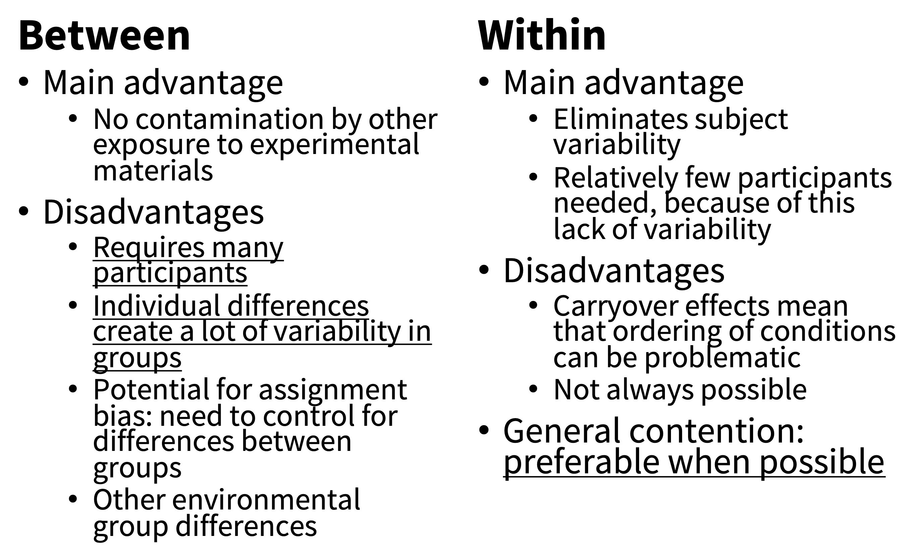
9.1.4 重复测量和实验 items
我们刚刚讨论的是是否向同一个参与者实施多个 manipulations。对 measures 来说，也会出现完全类似的决策！我们的 take-home point 也类似：除非出现特定困难，否则通常非常值得为每名参与者在每个条件中做多次测量（通过多个实验 trials）。
你可以创建一个 between-participants design，在其中先实施 manipulation，然后测量多次。图 9.8 展示了这种情境。有时这种设计效果很好。例如，想象一个经颅磁刺激（TMS）实验：参与者接受一段时间针对某个特定脑区的神经刺激。然后，他们反复执行某个测量任务，直到刺激效应消退。他们执行测量任务的次数越多，对任何效应的估计就越好（例如，与针对另一个脑区的 TMS 控制条件相比）。
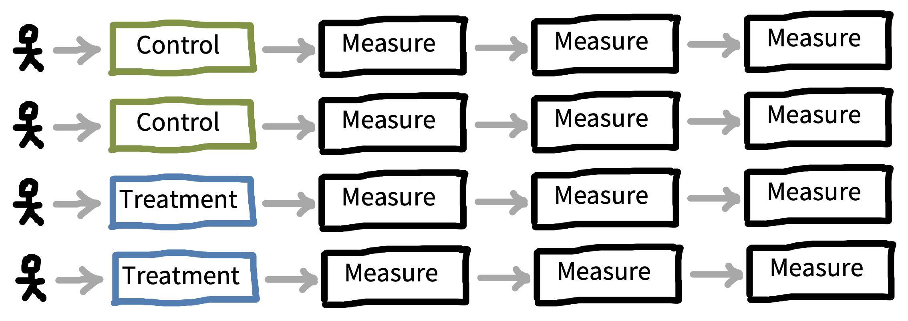
这种设计有时被称为重复测量设计，但这里的术语又有些棘手。“重复测量”指的是每个参与者被测量不止一次的任何实验，包括 between-participants 和 within-participants designs。11 我们的建议是：既使用 within-participants designs，也从每名参与者那里获得多次测量。
11 我们这里说的是用同一个测量做多个 trial，而不是多个不同测量。如 章 8 所讨论，我们倾向于反对在单个实验中测量很多不同东西，部分原因正是本章所阐明的这些担忧：如果你有时间，最好把你最关心的东西测得更精确。把一件事测好已经够难了。把一件事测好，远比把很多事测差要好。
为什么？在上一小节，我们描述了 between-participants design 中估计的变异如何依赖三个成分：（1）真实条件差异；（2）条件之间的抽样变异；（3）测量误差。
Within-participants designs 很好，因为它们不包含（2）。重复测量会减少（3）：测量次数越多，测量误差越低，进而测量信度越高！
不过，重复同一个测量很多次也有问题。有些测量无法在不改变反应的情况下重复。举一个明显例子，我们不能把完全相同的数学题给同一个人做两次，并得到两个有用的数学能力测量！这个问题的典型解决方案是创建多个 items。以数学评估为例，你会创建多个你认为测量同一个概念、但数字或其他表面特征不同的问题。
使用多个 items 做测量有两个好处。第一，它允许跨 item 合并反应，从而降低测量误差。第二，它提高了测量的可推广性。一个在许多不同 items 上都一致的效应，更可能是可以推广到一整类刺激的效应；这和使用多个参与者能够支持跨人群总体的推广，逻辑完全相同 (Clark 1973)。
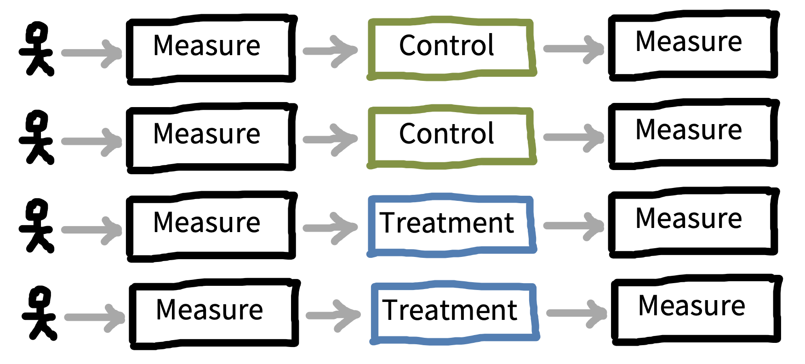
重复测量的 between-participants design 有一个变体：在干预前（pre-）和干预后（post-）都实施测量，如 图 9.9 所示。这种设计有时称为 pre-post design。当干预规模较大、也更难做成 within-participants 时，这种设计极其常见，例如在现场实验中，一个政策或课程被提供给一个样本而不提供给另一个样本。前测可以用来减去参与者层面的变异，从而恢复对 treatment effect 的更精确估计。回想一下，在纯 between-participants design 中，我们的 treatment effect 是 \(\beta = \theta_{T} - \theta_{C}\)。在 pre-post design 中，我们可以做得更好，计算 \(\beta = (\theta_{T_{\text{post}}} - \theta_{T_{\text{pre}}}) - (\theta_{C_{\text{post}}} - \theta_{C_{\text{pre}}})\)。这个方程说的是：“treatment 组比 control 组多上升了多少？12
12 这个估计有时称为 “difference in differences”。这个基本思想在计量经济学中被广泛使用，既用于实验情形，也用于准实验情形 (Cunningham 2021)。不过在实践中，我们建议在基于模型的分析中把 treatment 前测量作为协变量，而不是只做简单相减。
总之，within-participants、repeated-measurement designs 是大多数知觉、心理物理学和认知心理学研究的基本工具。当 manipulation 和 measure 都可以重复时，即便样本量很小，这些设计也能提供很高的测量精度；只要可能，我们都推荐使用。
刺激特异性效应
想象你是一名心理语言学家，假设名词比动词加工得更快。你做了一个实验，选出十个动词和十个名词，然后测量一大批参与者阅读每个词的时间。你发现了支持预测效应的强证据，并发表了一篇论文。唯一的问题是，与此同时，另一个人做了完全相同的研究，只是用了不同的名词和动词，并发表了一篇得出相反结论的论文。当这种情况发生时，可能每个效应都是由所选择的特定实验 items 驱动的，而不是一个对一般名词和动词都成立的推广 (Clark 1973)。
从样本推广到总体的问题并不新鲜。正如我们在 章 6 中讨论过的，我们一直在对参与实验的人样本做这类推断。我们的经典统计技术旨在量化从参与者样本推广到总体的能力，因此我们知道，非常小的样本量会导致很弱的推广。items 上会出现完全相同的问题：非常小的实验 items 样本，会导致到 item 总体的推广很弱。
Item effects 有点像偶然找到一组十个人，他们的左脚趾都比右脚趾长。如果你继续测量同一组人的脚趾，可以继续重复这个长度差异。但这并不意味着它对整个总体成立。
这种刺激可推广性问题出现在心理学的许多不同领域。一个例子是，数百篇论文曾围绕一个叫 “risky shift” 的现象展开，也就是小组在就某个决策进行审议时，会比个人做出风险更高的决策。不幸的是，这个现象似乎完全由小组审议的特定 vignette 选择所驱动：有些故事产生 risky shift，另一些故事则产生更保守的 shift (Westfall, Judd, 和 Kenny 2015)。
另一个例子来自记忆文献。在一篇经典论文中，Baddeley, Thomson, 和 Buchanan (1975) 提出，发音耗时更长的词（“tycoon” 或 “morphine”）会比耗时更短的词（“ember” 或 “wicket”）记得更差，即使它们有相同音节数。这个效应似乎也由原始论文所选择的特定词组驱动。它在那一特定刺激集上高度可重复，但不能推广到其他刺激集 (Lovatt, Avons, 和 Masterson 2000)。
这些例子的含义很清楚：实验者需要在实验设计和分析中小心，避免从自己的刺激过度推广到更宽泛的构念。三个主要步骤可以帮助实验者避免这个陷阱：
- 为了最大化一般性，使用与参与者样本规模相当的实验 items 样本，例如词、图片或 vignette。
- 重复一个实验时，除了重新抽取参与者样本，也考虑重新抽取 item 样本。起草新 item 更费力，但会带来更稳健的结论。
- 当实验 items 是从更广泛总体中随机抽取时，使用包含这个抽样过程的统计模型（例如 章 7 中带 item 随机截距的 mixed effects models）。
9.1.5 离散和连续的实验 manipulations
心理学中的大多数实验设计使用离散条件 manipulation：treatment vs control。在我们看来，相对于更连续地操纵 treatment 强度，这个决策常常错失机会。实验的目标是估计因果效应；理想情况下，这个估计可以推广到其他情境，并作为理论的基础。不只是测量一个效应，而是测量一个剂量-反应关系，也就是当 manipulation 强度变化时，测量如何变化。这有许多好处，可以帮助实现上述目标。
许多 manipulation 都可以被滴定，也就是说，只要实验者有一点创造力，它们的强度就可以连续变化。课程干预可以以不同强度实施，例如改变授课 session 数。对于 priming manipulation，可以改变 prime 刺激的频率或持续时间。两个刺激可以连续 morph，从而考察分类边界。13
13 这些方法在知觉和心理物理学研究中极其常见，部分原因是被研究的维度本身往往天然连续。如果不连续操纵刺激对比度，基本不可能估计参与者的视觉对比敏感度！
Dose-response designs 很有用，因为它们可以让你洞察从 manipulation 映射到 measure 的函数形状。知道这个形状可以帮助你的理论理解！看看 图 9.10 给出的例子。
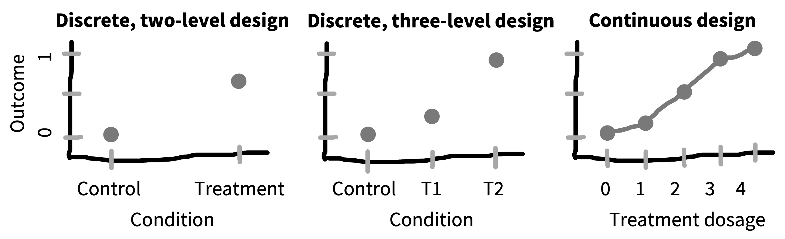
如果你的实验只有两个条件，那么关于 manipulation 和 measure 之间的关系，你最多只能说它产生了某个特定大小的效应；实质上，你是假设 condition 是一个名义变量。 如果你有多个有序 treatment 水平，就可以开始推测 treatment 和效应大小之间关系的性质。但如果你能测量 treatment 的强度，那么就可以开始通过参数函数（例如线性回归、 sigmoid 或其他函数）描述 treatment 强度和效应强度之间关系的性质。14 这些参数函数反过来可以让你从实验中推广，预测在你没有直接测量的干预条件下会发生什么！
14 当然，这些假设都带有理论负载：选择线性函数或 sigmoid 并不是必要的，没有什么能保证简单、平滑或单调函数就是正确的。关键是，选择一个函数会明确你关于 treatment-effect 关系性质的假设。
titrated designs（滴定式设计）相关的取舍
和成人一样，婴儿喜欢看更有趣、更复杂的刺激。但他们总是偏好复杂刺激吗？还是说他们会寻找与自己加工能力相匹配的复杂度水平？为了检验这个假设，Brennan, Ames, 和 Moore (1966) 让三个不同年龄组的婴儿（3、8 和 14 周，\(N = 30\)）观看三种不同复杂度的黑白棋盘格刺激（2 x 2、8 x 8 和 24 x 24）。
他们的发现绘制在 图 9.11: 最年幼的婴儿偏好最简单的刺激，中间年龄的婴儿偏好中等复杂度刺激，最年长的婴儿偏好最复杂刺激。这些发现有助于推动这样一种理论：婴儿会优先注意那些为其加工能力提供适当学习输入的刺激 (Kidd, Piantadosi, 和 Aslin 2012)。
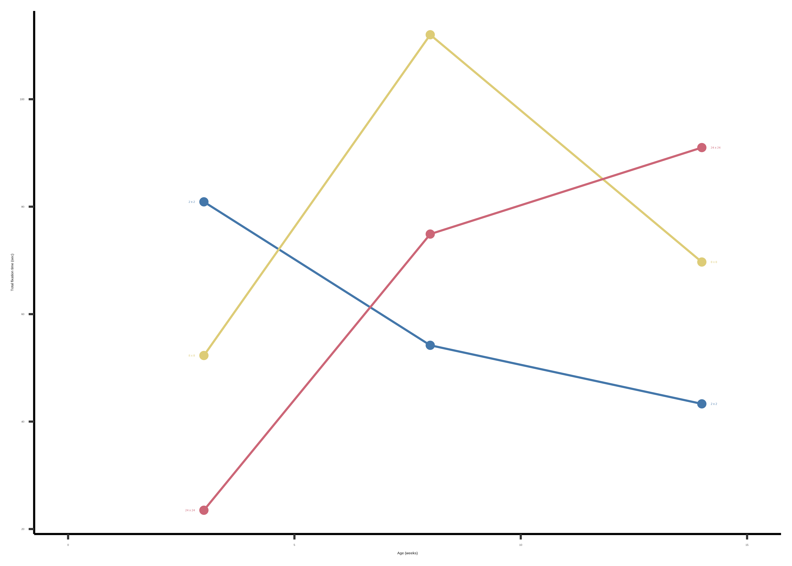
如果你的目标只是检测效应是否为零，那么 dose-response designs 并不能实现最大的 statistical power。 例如，如果 Brennan, Ames, 和 Moore (1966) 只是想获得最大 statistical power，他们也许只应该测试两个年龄组和两个复杂度水平（比如 3 周和 14 周婴儿，以及 2 x 2 和 24 x 24 棋盘格）。这已经足以显示复杂度和年龄之间的交互，而且把更多资源投入这四个条件（而不是九个条件）会让每个条件的估计更精确。但他们的发现就没那么清楚地支持“婴儿偏好适合其加工能力的刺激”这一观点了，因为没有哪个组会偏好中等复杂度（就像 8 周婴儿显然表现出的那样）。通过努力测量中间条件，他们为自己的理论提供了更强检验。
9.2 选择你的 manipulation
上一节中，我们回顾了许多常见实验设计。这些设计为组合 manipulations 和 measures 提供了一组常见选项。但你的选择必须以你感兴趣的具体 manipulation 为基础！本节会讨论实验者在设计 manipulations 时需要考虑的问题。
在 章 8 中，我们讨论了测量效度，但效度这个概念也可以应用于 manipulations，而不只是 measures。具体来说，如果一个 manipulation 对应于实验者意图干预的构念，那么它就是有效的。在这个语境中，针对 manipulations 的内部效度威胁，通常指实验设计中的某些因素让预期 manipulation 没有真正干预目标构念。相反，针对 manipulations 的外部效度威胁，通常指 manipulation 本身与目标构念并不很好匹配。
9.2.1 内部效度威胁：混淆
最重要的是，manipulations 必须真的操纵正在估计其因果效应的构念。如果它们实际操纵的是别的东西，那么它们就是混淆的。这个术语在心理学中被广泛使用，但值得重新看一下它的含义。实验混淆是一个在实验设计过程中产生的变量，它既与预测变量有因果关系，又可能与 outcome 有关系。因此，它是对内部效度的威胁。
回到 章 1 中关于因果推断的讨论。我们的目标是用随机实验估计金钱对幸福的因果效应。但直接给人钱是一个很大的干预，它涉及与研究者接触；即使你的 manipulation 失败了，单独的接触也可能导致实验效应。因此，许多给参与者钱的研究会给少量钱或大量钱。这个设计让两个条件中的研究者接触保持一致，意味着两个条件之间的 outcome 差异应该由收到的钱数造成（除非还有其他 confounds！）。
假设你正在设计这样一个实验，并且想遵循我们的建议，使用 within-participants design。 你可以测量幸福，给参与者 $100，等待一个月后再次测量幸福，再给参与者 $1,000，等待一个月，然后第三次测量幸福。麻烦在于，这个设计有一个明显的实验 confound（图 9.12）：金钱礼物的顺序。也许幸福只是随着时间推移上升得更多，而与收到第二份礼物无关。
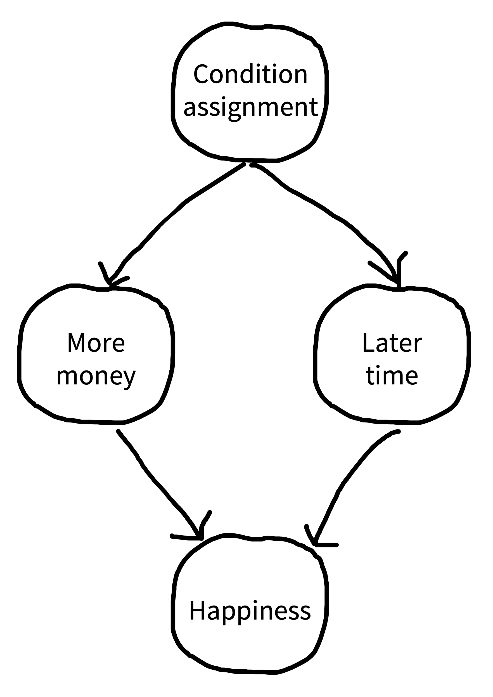
如果你认为实验设计中可能存在 confound，就应该思考如何移除它。第一个选项是消除，也就是我们上面描述过的：基本上是在不同条件之间匹配某个特定变量。对多数 confounds 来说，这应该是我们的首选。不幸的是，在我们的 within-participants 金钱-幸福研究中，顺序与条件混淆了，所以如果我们匹配顺序，就完全消除了条件 manipulation。
第二个选项是 counterbalancing，也就是在参与者之间系统地改变一个混淆因素，使它在整个实验中的平均效应为零。在我们的例子中，在参与者之间 counterbalance 顺序是一个非常安全的选择。有些参与者先拿 $100，另一些参与者先拿 $1,000。这样，你就能保证条件顺序这个 confound 不会影响平均效应。这种 counterbalancing 的效果，是“剪断”条件分配和较晚时间之间的因果依赖。我们在因果图中用剪刀图标表示这一点（图 9.13）。15 时间仍然可以影响幸福，但这个效应独立于条件效应，因此你的实验仍然可以给出条件效应的无偏估计。
15 在实践中，counterbalancing 就像给你的 factorial design 增加一个额外因素！但因为这个因素是nuisance factor，也就是基本上我们并不关心的因素，所以我们不把它作为真正的条件 manipulation 讨论。尽管如此，在初步分析中检查这类 nuisance factor 的效应是好做法。即便你的平均效应不会被它偏倚，它也会引入变异，而为了理解其他效应和规划新研究，你可能想理解这些变异。
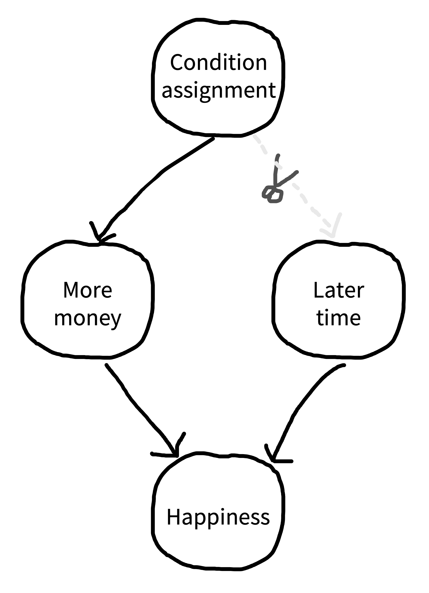
当一个变量有太多水平，或存在多个混淆变量时，counterbalancing会变得更棘手。在这种情况下，可能无法做完整 counterbalance，使这些因素的所有组合都被相同数量的参与者看到。你可能必须依赖部分 counterbalancing 方案或拉丁方设计（见上面的 Depth 框；在这种情况下，拉丁方被用来创建刺激顺序，使每个 treatment 在顺序中的位置相对于另外两个混淆变量被控制）。
最后一个选项，尤其适用于这种棘手情况，是随机化：也就是通过随机选择决定向参与者实施 nuisance variable 的哪个水平。现在许多实验干预由软件呈现，因此随机化越来越常见。如果你能够随机化实验 confounds，大概就应该这么做。随机化真正会带来麻烦的时候，是你有大量选项、很少参与者，或者两者兼有。那时，随机化因素的各水平可能会不平衡。跨许多实验平均时，不平衡会被抵消；但在单个实验中，它可能导致数值上不幸的偏差。
思考实验设计的一个好方法，是一步一步走完整个实验，并思考潜在 confounds。对于每一个 confound，考虑它能否通过 counterbalancing 或随机化移除。正如我们的 case study 所显示，confounds 并不总是显而易见，尤其是在复杂范式中。没有万无一失的方法能保证你发现每一个 confound；有时避免它们的最好方法，单纯就是把你的候选设计拿给一个持怀疑态度的朋友看。
9.2.2 内部效度威胁：Placebo、demand 和 expectancy
第二类重要的内部效度威胁，来自研究设计被 manipulation 如何实施、甚至 manipulation 被实施这件事相关的因素混淆的情况。在某些情况下，这些因素会产生可以控制的 confounds；在另一些情况下，它们只能被理解并防范。Rosnow 和 Rosenthal (1997) 把这些称为“artifacts”：由人对人开展研究时产生的系统性错误。
Placebo effect 是指参与者在研究情境中对 treatment 的期待所带来的测量正向效应。placebo 的经典例子来自医学：把无活性的糖丸作为“treatment”给患者，会让一些患者报告他们正在接受治疗的症状有所减轻。Placebo effects 是医学研究中的主要担忧，也是医学实验设计中的固定组成部分 (Benedetti 2020)。关键洞见是，treatment 不能只与没有 treatment 的 baseline 比较，而应该与这样一种 baseline 比较：treatment 的心理方面存在，但“active ingredient”不存在。用我们一直使用的术语来说，当你只是比较 treatment 和 no-treatment 条件时，接受 treatment 的体验（独立于 treatment 内容）就是一个混淆因素。
脑训练？
做有挑战性的认知任务能让你更聪明吗？在 2000 年代末和 2010 年代初，一个庞大的“脑训练”产业兴起。Lumos Labs、CogMed、BrainHQ 和 CogniFit 等公司提供一些游戏，这些游戏常常以认知心理学任务为模型，并声称可以提高记忆、注意和问题解决能力。
这些公司的主张，部分基于一批科学文献：这些文献报告说，对困难认知任务进行集中训练，能够带来迁移到其他认知领域的收益。其中最有影响力的是 Jaeggi 等 (2008) 的一项研究。他们进行了四个实验，参与者（所有研究合计 \(N = 70\)）被分配到两种条件之一：通过一个困难的工作记忆任务（“dual N-back”）进行工作记忆训练，或无训练控制；训练天数从八天到 19 天不等。
这项研究的发现激起了巨大兴趣，因为他们报告说，参与者不仅在具体训练任务上表现提升，在一个他们并没有训练过的一般智力任务上也有所提升。虽然控制组在这些任务上的分数也提高了，大概只是因为被测试了两次，但存在一个 condition by time（pre-test vs post-test）交互，使训练组（把四个训练实验合并后）的分数在训练期内显著增长更多（图 9.14）。这些结果被解释为支持 transfer，也就是在一个任务上的训练带来更广泛收益，而这正是“脑训练”的关键目标。
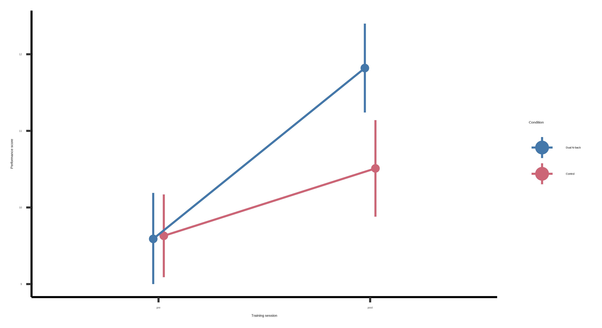
不过，原论文的细心读者注意到了 analytic flexibility 的迹象（如 3 和 6 章所讨论）。例如，关键统计模型拟合的是一个由事后合并实验产生的数据集，在关键交互上得到 \(p = 0.025\) (Redick 等 2013)。当数据被拆开时，可以清楚看到各个子实验中的测量和效应都不同（图 9.15）。
同一研究团队的几项重复研究处理了其中一些问题，但它们仍然没有显示出令人信服的 transfer 证据。特别是，这些研究没有与主动控制组比较；主动控制组中的参与者会用同样多时间做某种替代活动 (Simons 等 2016)。这种比较很关键，因为与被动控制组（不接受任何干预的组）比较，会把参与者在研究中的一般努力和参与程度，与所使用的特定训练混淆起来。相对于被动控制的成功 transfer，可能来自参与者的参与、期待或动机，而不是训练本身。
一项带有主动控制组和广泛 outcome measures 的细致训练重复研究（\(N = 74\)），没有发现工作记忆训练带来的任何 transfer effects (Redick 等 2013)。一项包含 23 项研究的 meta-analysis 得出结论：这些发现让人怀疑工作记忆训练能否提高认知功能 (Melby-Lervåg 和 Hulme 2013)。在对 cognitive transfer theory 的一次有说服力检验中，一个 BBC 节目（“Bang Goes the Theory”）鼓励听众参加一项为期六周的在线脑训练研究。超过 11,000 名听众完成了前测和后测，并至少完成了两次训练 session。无论是针对规划和推理的聚焦训练，还是关于记忆、注意和数学的更广泛训练，都没有迁移到未经训练的任务上。
Placebo effects 是脑训练文献中某些阳性发现的一个合理解释。Foroughi 等 (2016) 通过两种不同广告招募参与者。第一种广告宣称 “numerous studies have shown working memory training can increase fluid intelligence”（“placebo treatment” 组），第二种只是提供实验学分（控制组）。一次训练 session 后，placebo treatment 组在矩阵推理能力上显示出显著提升。placebo treatment 组参与者从训练中获得的收益，超过了他们通过训练本身可能获得的任何收益。此外，回应 placebo treatment 广告的参与者倾向于认同智力可塑性的陈述，这说明他们可能尤其容易自选择进入这个干预。
在总结大量脑训练文献时，Simons 等 (2016) 写道：“Despite marketing claims from brain-training companies of ‘proven benefits’ … we find the evidence of benefits from cognitive brain training to be ‘inadequate.’”
如果 placebo effects 反映的是参与者对 treatment 的期待，那么 demand characteristics 反映的则是参与者认为实验者想要什么，以及他们想帮助实验者达成目标的愿望 (Orne 1962)。Demand characteristics 常被作为避免 within-participants designs 的理由：如果参与者意识到干预存在，他们随后可能会以自己认为对实验者有帮助的方式作答。控制或识别 demand characteristics 的典型工具包括：使用 cover story 掩盖实验目的；使用 debriefing 程序探查参与者是否通常猜到了实验目的；以及（也许最有效地）创建一个 demand characteristics 类似、但缺少实验干预关键成分的控制条件。注意，如果你用 cover story 掩盖实验目的，就值得想想自己是否使用了 deception， 因为这可能引发伦理问题（见 章 4）。当然，你应该确保向参与者 debrief 实验的真实功能！
内部效度威胁清单中的最后一项是实验者期待效应，即实验者的行为以某种方式偏倚参与者，从而在没有真实差异的地方制造出条件差异的表象。这类效应的经典例子来自动物学习文献和 Clever Hans 的故事。Clever Hans 是一匹看起来能够通过用蹄子敲击答案来做算术的马。经过更深入调查后，人们发现它是在被训练者的姿势提示（显然训练者本人并不知道）下，在达到想要的答案时停止敲击。这匹马完全不懂数学，但实验者的期待改变了它在不同条件下的行为。
在任何由人类实验者实施、且实验者知道自己正在实施哪个条件的实验中，条件差异都可能来自实验者传递自己的期待。Table 9.2 展示了一项 meta-analysis 的结果，它估计了多个领域中 expectancy effects 的大小，幅度令人震惊。毫无疑问，实验者期待足以人为地“创造”出许多有趣现象。期待机制本身也是一个有意思的研究主题；在许多情况下，期待似乎以非言语方式传递，很像 Clever Hans 学会的方式 (Rosnow 和 Rosenthal 1997)。
| Domain | d | r | Example of type of study |
|---|---|---|---|
| Laboratory interviews | 0.14 | 0.07 | Effects of sensory restriction on reports of hallucinatory experiences |
| Reaction time | 0.17 | 0.08 | Latency of word associations to certain stimulus words |
| Learning and ability | 0.54 | 0.26 | IQ test scores, verbal conditioning (learning) |
| Person perception | 0.55 | 0.27 | Perception of other people’s success |
| Inkblot tests | 0.84 | 0.39 | Ratio of animal to human Rorschach responses |
| Everyday situations | 0.88 | 0.40 | Symbol learning, athletic performance |
| Psychophysical judgments | 1.05 | 0.46 | Ability to discriminate tones |
| Animal learning | 1.73 | 0.65 | Learning in mazes and Skinner boxes |
| Weighted mean | 0.70 | 0.33 | |
| Unweighted mean | 0.74 | 0.35 | |
| Median | 0.70 | 0.33 |
在医学研究中，金标准是这样一种实验设计：患者和实验者都不知道患者处在哪个条件中。16 其他设计的结果会被怀疑，因为它们容易受到 demand 和 expectancy effects 影响。在心理学中，现代最常见的防范实验者期待的方法，是由计算机平台实施干预，因为它可以在不同条件中以连贯且统一的方式给出指令。
16 这些通常称为双盲设计（不过现在常常更偏好 masked 这个术语）。
对于必须由实验者实施的干预，理想情况下实验者不应知道自己正在实施哪个条件。另一方面，在心理学中维持实验者无知的后勤操作可能相当复杂。因此，许多研究者选择较低程度的控制，例如通过脚本标准化干预实施。出于实践原因，这些设计有时是必要的，但应该受到仔细审视。“你如何排除实验者期待效应？” 是一个令人不舒服的问题，但它应该在研讨会和论文评审中被更频繁地提出。
9.2.3 Manipulations 的外部效度
某个具体实验 manipulation 的目标，是操作化一个特定的目标因果关系。正如测量与构念之间的关系可能更有效或更无效，manipulation 与构念之间的关系也一样。你怎么判断？和测量的情形一样，通往效度没有唯一大道。你需要提出一个效度论证 (Kane 1992)。17
17 一个 caveat 是：manipulation 的效度包含 manipulation 和 measure 的效度。如果测量无效，你不可能得到一个好的因果效应估计。
为了检验金钱对幸福的效应，我们的 manipulation 是给参与者 $1,000。这个 manipulation 显然有表面效度。但人们多久会平白无故收到一笔现金横财，而不是在工作中加薪或从亲戚那里继承钱？效应是由拥有这笔钱造成的，还是由无附加条件地收到这笔钱造成的？我们必须做更多实验，才能看出金钱 manipulation 的哪个方面最重要。即便在这种直接的情形中，我们也需要谨慎对待自己所提出 claim 的宽度。
有时，效度论证是基于 manipulation 成功在测量上产生了某种变化。我们开头的 implicit theory of mind case study 中，刺激包含一个动画 Smurf 角色，论证是参与者在做判断时考虑了 Smurf 的信念。这个刺激选择似乎很意外：参与者不仅要追踪其他人的隐性信念，还要追踪非人类动画角色图像的信念。另一方面，基于 manipulation 的成功，作者提出了一个 a fortiori 论证：如果人们连动画 Smurf 的信念都会追踪，那么他们必定会追踪真实人类的信念。
来看最后一个例子，以便进一步思考 manipulation validity。 Walton 和 Cohen (2011) 进行了一项短期干预：大学生（\(N = 92\)）阅读关于社会归属和大学过渡挑战的材料，然后用这些想法重新框定自己的经历。这个干预对成绩和 well-being 产生了长期改变。虽然该干预无疑有理论基础，但我们对这个干预效度的一部分理解来自其 efficacy：如果干预归属感会在 outcome measures 上造成这么大变化，那么 sense of belonging 必定是一个强有力的因素。18 唯一的危险是论证变成循环的：理论是正确的，因为干预取得了成功；干预被假定为有效的，因为理论如此说明。走出这个循环的方式，是重复和推广这个干预。如果干预能够反复产生 outcome，就像归属感干预的重复研究所显示的那样 (Walton, Brady, 和 Crum 2020)，那么这个 manipulation 就会成为未来理论的一个有趣目标。这类研究项目的下一步，是理解这类干预的限制（有时称为boundary conditions）。
18 另一方面，如果 manipulation 没有在你的测量上产生变化，也许 manipulation 是无效的，但构念仍然存在。归属感可能仍然重要，即便我的特定干预没有改变它！
9.3 本章小结：实验设计
本章开始时，我们考察了一些常见实验设计，它们让我们能够测量与一个或多个 manipulations 相关的效应。简短地说，我们的建议是：“保持简单！”许多实验的 failure mode 是包含太多 manipulations，而这些 manipulations 又被测得不够精确。
从单个 manipulation 开始，并仔细测量它。理想情况下，除非 manipulation 与这种设计完全不兼容，否则这个测量应该通过 within-participants design 完成。如果这个设计还能纳入 dose-response manipulation，它就更可能为定量理论化提供基础。
如何确保你的 manipulation 有效？仔细的实验者需要考虑可能的 confounds，并确保它们被控制或随机化。他们还必须考虑其他 artifacts，包括 placebo、 demand 和 expectancy effects。 最后，他们必须开始思考自己的 manipulation 与更宽泛理论构念之间的关系，也就是他们希望检验其因果作用的那个构念。
选择你所在心理学领域中的一项经典研究。分析它的设计选择：操纵了多少因素？做了多少测量？它使用的是 within- 还是 between-participants design？ 测量是否重复？你能否根据取舍（例如 carryover effects、 疲劳或其他因素）为这些选择辩护？
考虑同一项研究。设计一个替代版本，改变其中一个设计参数（例如删掉一个 manipulation 或 measure，或把 within-participants 改为 between-participants）。这个改变有什么优缺点？你认为你的设计改进了原始设计吗？
- 许多材料在这本经典研究方法教材中有更深入介绍：Rosenthal, Robert, and Ralph L. Rosnow (2008). Essentials of Behavioral Research: Methods and Data Analysis. Third Edition. McGraw-Hill. http://dx.doi.org/10.34944/dspace/66.